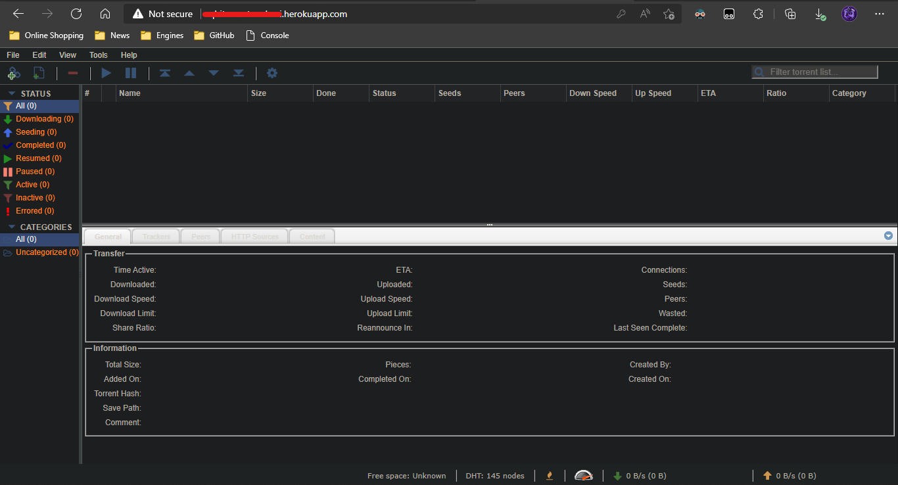
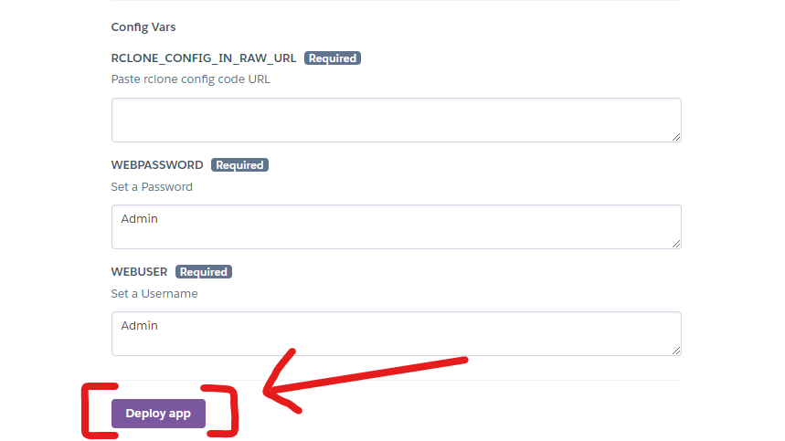

Torrent Multi Cloud
A Powerful Web Based app with QBitorrent Web UI to leech or seed it while unlocking the power of Rclone to transfer Data to any Cloud🔥
🆕What's New!🆕
v2.2.1 (Revolution Starts!)
1.Railway Deployment Supported!😉
2.Optimized for Custom Domain.😌
3.Gist GitHub guide added!😎
4.Auto Rapid-Deploy crash on Heroku Fixed.🤔
⛔ Notice
1.Use Railway Deployment! For Adding Custom Domain.
2.Never Share the address of your QBitorrent Web App.
3.Rclone will always by default use First Remote in config file.
4.Want SSL Certificate? Deploy on Railway.
📝Introduction
A Project which uses QBitorrent Web UI to give you the ability to leech or seed it and uses Rclone to transfer your file to any cloud and hosted on Remote server to do everything with lightning speed!⚡
📦 Creating Rclone Config file
Now if you think that this is a rocket science,then relax! I have created a super easy RCLONE CLOUD SETUP and now you don't need to download anything.You can create it in any device which have a simple browser.I have created a complete simple guide, just click on the below given Button to start creating your RCLONE CONFIG FILE online.In this project you just have to copy the code of RCLONE CONFIG FILE after opening it in any simple Text Editor app and paste it during the Setup of your App.
Create Rclone Config File Online
1.First Click on the Above Button and Read the instruction.
2.After Successfully Downloading the RCLONE CONFIG FILE, open it in any simple text Editor and copy its code
3.Now after copying the RCLONE CONFIG FILE code. Go to gist.github.com and paste the code and save it with name "rclone.conf" and click "Create secret gist".

4.After that! Now click the "Raw" button to get the direct link to your gist.

5.Once it opens your code in a new tab just copy the URL of that page which will look like this:

6.Now you are ready to read the Next section!
⚙️ How to use?
Deploy on Heroku:
1.First open the app deployment page on Heroku: Open it
2.Now if you don't have a Heroku account then create once or just login!

3.After opening the Deployment page, Enter the following Values
1.App name - Give a Nice name to your Index.
2.RCLONE_CONFIG_IN_RAW_URL - Paste the URL which you copied from STEP 5 written in above section.
3.WEBPASSWORD - If you want to add password protection to prevent unauthorized access then change the value to "true" and change the below two values otherwise keep it "false" and ignore the following two values
4.WEBUSER - If you set authentication to "true" then change its value! This value will be your Index Password

4.Now click on the Deploy button and wait patiently and once it got successful deployed, click View App button

5.Clicking "View App" button will open a new website which is your QBitorrent Web App! Just remember the URL of your QBitorrent Web App and access it anytime and anywhere.
6.If you deploy your QBitorrent Web App through Heroku then its URL should be like this: https://{appname}.herokuapp.com/
7.Sometimes after deploying the Index! It may take max 10 Minutes to start working.
💤 Download/Transfer Getting Paused?
1.This Problem only happens in Heroku after 30 Minutes.
2.For the Solution! Just sign up on Cron-Job.org
The Basic cause of this Error is that Heroku stop the dyno of your app after 30 Minutes of Interection (By User!) the above website will keep your App active by pinging it in a particular time set by you.
3.This Error may also cause when Free Dyno Hours of heroku which is 550 Hours / Month gets over!
4.To Fix the dyno used Error just make a new Account on Heroku and transfer the app ownership to it!
🖇️ Quick Links
Text Editor Download:
Text Editor for Android
Text Editor for iOS
⛑Contact Us!
Join our Update Channel at Telegram: Join Now!
Directly Contact the Developer using Telegram @HelpAutomatted_Bot
❤️Credits & Thanks
Dr.Caduceus: Face Behind this.
DevAnaZ: Mastermind.
Anonymous: For Rapid Response.